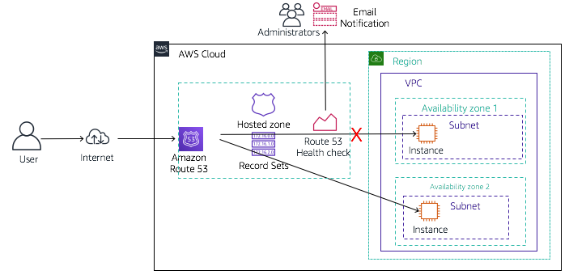

In this activity you will configure failover routing for the Café website.
The activity environment starts with two Amazon EC2 instances already created. Each of the instances has the full LAMP stack installed and the Café website deployed and running. The EC2 instances are deployed in different Availability Zones. For example if the web servers are running in the eu-west-2 Region, then one of the web servers will run in eu-west-2a and the other one will run in the eu-west-2b Availability Zone.
You will configure your domain such that, if the website in the primary Availability Zone becomes unavailable, Amazon Route 53 will automatically failover application traffic to the instance in the secondary Availability Zone.
When you are finished, your environment will look like this:

After completing this activity, you will be able to:
A New Business Requirement for Café - Failover Routing
There have been many customers who have taken advantage of online ordering at the Café. They like how placing the order online ensures that when they come to the cafe to pick up their orders, they are guaranteed to get the items they want.
However, there was an incident two days ago when the website was inaccessible for most of the day. Customers expressed frustration that they could not place their orders online.
As a result, you have now been asked to make sure that this does not happen again. Martha and Frank have asked if you can configure a backup deployment of the website so that if the main site goes down, the backup takes over. They would also like to be alerted when the primary site goes down so that they know about it.
You really have a challenging work assignment now! Time to put your understanding of DNS and routing to good practical use!
Duration: This activity requires approximately 60 minutes to complete.
At the top of these instructions, click Start Lab to launch your lab.
A Start Lab panel opens displaying the lab status.
Wait until you see the message "Lab status: ready", then click the X to close the Start Lab panel.
At the top of these instructions, click AWS
This will open the AWS Management Console in a new browser tab. The system will automatically log you in.
Tip: If a new browser tab does not open, there will typically be a banner or icon at the top of your browser indicating that your browser is preventing the site from opening pop-up windows. Click on the banner or icon and choose "Allow pop ups."
Arrange the AWS Management Console tab so that it displays along side these instructions. Ideally, you will be able to see both browser tabs at the same time, to make it easier to follow the lab steps.
In this task, you will analyze the resources which have been automatically created for you by AWS CloudFormation. You will also modify a few settings in AWS Systems Manager.
In the AWS Management Console, on the Services menu, click VPC. Then, in the left side of the page, select Subnets.
Notice that two Cafe subnets have already been created inside the Cafe VPC in this account.
From the Services menu, choose EC2, then click on Instances.
Two EC2 instances have already been created for you. CafeInstance1 is running in Cafe Public Subnet 1 and CafeInstance2 is running in Cafe Public Subnet 2.
Click on CafeInstance1 and notice that it has an IAM role applied to it.
The role allows applications running on the instance to access the AWS Systems Manager service.
NOTE: the CafeInstance2 instance is similarly configured.
Copy the IPv4 Public IP value from the CafeInstance1 Description panel, and paste it into the URL address bar in a new browser tab.
A message "Hello From Your Web Server!" should display.
Append /cafe to the end of the URL and load that page.
This test simply confirms that the primary Cafe website is available.
Return to the EC2 Console and click on CafeInstance2. Copy the IPv4 Public IP value from the CafeInstance2 Description panel, and paste it into the URL address bar in a new browser tab. Append /cafe to the end of the URL and load that page.
The secondary Cafe website should load as well.
Back in the AWS Management Console, from the Services menu, choose Systems Manager, then click on Parameter Store, which is located under Shared Resources in the bottom left of the page.
Notice the seven parameters.
Click on the /cafe/currency link and note the currency value.
If the cafe web server instances are running in the London region, then click Edit, in the Value field, change $ to £ and click Save changes.
Note: depending on what region your web server instances are running, you may want to change the currency.
If the instances are running in a US data center (such as us-east-1), then you should leave the currency as $ (US Dollars).
However, if the instances are running in the UK, then since the Cafe server instance that services the UK customers uses this parameter, the currency should be in British Pounds instead of US Dollars.
Click on Parameter Store again to return to the view that shows all the defined parameters, then check the box next to /cafe/showServerInfo and click Edit.
In the Value field, change false to true and click Save changes.
Note: Changing showServerInfo to true will display additional information on the Cafe web pages that will prove useful as you go though the configuration steps in this activity.
Click on the /cafe/timeZone link.
Note the value is currently set to America/New_York.
If your web servers are running in the us-east-1 region, then this time zone setting is appropriate. However, if your web servers are running elsewhere, you can optionally change the timezone so that when orders are placed on the web site, the order time stamp reflects the correct time.
For example, if your web servers are running in eu-west-2, which is the London data center, click on Edit, and change the value to Europe/London and click Save changes.
A list of time zone values can be found here.
Return to the browser tab where you have the primary deployment of the Café website open and refresh the page.
You should see that a “Server Information” section now displays on the web page, just under the Café banner.
Click on the Menu link.
You should see that the currency for each menu item displays in the currency that you defined in the AWS Systems Manager parameter that this website uses.
Try submitting an order.
You should see that the Order Confirmation page reflects the time the order was placed, in the time zone where the web server is running.
The first step to configure failover is to create a health check for your primary website.
Back in the AWS Management Console, from the Services menu, choose Route 53.
You can safely ignore any error messages displayed because of IAM restrictions placed on lab accounts.
In the left navigation pane, click Health checks.
Click Create health check, and configure the following, leaving all other fields with their default values:
Primary-Website-HealthcafeExpand Advanced configuration and configure the following, leaving all other fields with their default values:
2This will make your health check respond faster.
Click Next.
Configure the following:
Primary-Website-HealthClick Create health check.
Route 53 will now check the health of your site by periodically requesting the domain name you provided and verifying that it returns a successful response.
The health check may take up to a minute to show a "Healthy" status. Click the refresh icon to update your view of the current status.
Place a check in the box next to Primary-Website-Health and then click on the Monitoring tab.
This gives you a view of the status of the health check over time. It may take a few seconds before the chart becomes available. Click the refresh page section icon to update your view.
Check your email. You should have received an email from AWS Notifications.
Click the Confirm subscription link contained in the email to finish setting up the email alerting that you configured when you created the health check.
You will now configure failover routing based upon the health check you just created.
Back in the Route 53 console, in the left navigation pane, click Hosted zones.
The domain name XXXXXX_XXXXXXXXXX.vocareum.training —where the Xs are digits unique to your AWS account- has already been created for you.
All lab participants have been given a unique domain name.
Click XXXXXX_XXXXXXXXXX.vocareum.training to display the two record sets that already exist in this hosted zone.
These two record sets were created when the domain was registered with Route 53. The NS, or Name Server record, lists the four name servers that are the authoritative name servers for your hosted zone. You should not add, change, or delete name servers from this record.
The start of authority (SOA) record identifies the base DNS information about the domain. It was also created when the domain was registered with Route53.
Click Create record and configure the following options:
wwwFailoverPrimaryClick Create records.
The A-type record set you just created should now appear as the third record set in the hosted zone.
Now you will create another record set, this time for the backup web server.
Click Create Record and configure the following options:
wwwFailoverSecondaryClick Create records.
Another A-type record set should now be listed.
You have now configured your web application to fail over to another Availability Zone.
In this task, you will visit the DNS records in a browser in order to verify that Route 53 is pointing correctly to your primary website.
Copy the Name value of one of the two A records you created.
Tip: Click on the box associated with one of the A records. A panel with the record name will appear.
Open a new browser tab and paste the A record name, removing the trailing period. Also, append /cafe to the end to the URL. Load the page.
The Cafe primary website should load, as indicated by the server information section of the page which should display the Region/Availability Zone.
Tip: The URL should be http://www.XXXXXX_XXXXXXXXXX.vocareum.training/cafe/ where the Xs are unique digits.
In this task, you will try to verify that Route 53 correctly fails over to your secondary server if your primary fails. For the purposes of this activity, you will simulate a failure by manually stopping CafeInstance1.
Return to the AWS Management Console. On the Services menu, click EC2 and then choose Instances.
Check the box, next to CafeInstance1.
From the Instance state menu click Stop instance. Then, if prompted, click Yes, Stop.
The primary website will now stop functioning. The Route 53 health check you configured will notice that the application is not responding, and the record set entries you configured will cause DNS traffic to failover to the secondary EC2 instance.
On the Services menu, click Route 53.
In the left navigation pane, click Health checks.
Select Primary-Website-Health, and in the lower pane, click Monitoring.
You will see failed health checks within minutes of stopping the EC2 instance.
Wait until the status of Primary-Website-Health is Unhealthy. If necessary, periodically click refresh. This may take a few minutes.
Return to the browser tab where you have the vocareum_XXXXXX_XXXXXXXXXX.training/cafe website open and refresh the page.
Notice that the Region/Availability Zone value now displays a different Availability Zone (for example, eu-west-2b instead of eu-west-2a). You are now seeing the website served from your CafeInstance2 instance.
If you do not get the correct results, re-confirm that Primary-Website-Health has registered as Unhealthy and then try again. It may take a minute or two for DNS changes to propagate.
Check your email. You should have received an email from AWS Notifications entitled "ALARM: Primary-Website-Health-awsroute53-..." with details about what triggered the alarm.
Note: It may take a few minutes before the email arrives.
You have now successfully confirmed that your application environment can failover from its primary Availability Zone to its secondary Availability Zone if the server in the primary fails.
Update from Café
Nikhil and Sofîa have once again impressed people around the Café!
During testing, Martha received an email alerting her that the primary website was down. She told the story about how she immediately checked the website after receiving the alert, and was impressed to see that the website was still available and orders could still be placed. That failover solution she requested must really be working!
The cafe employees have also mentioned that they have not heard customers complaining anymore about website outages.
Congratulations! You have completed the activity.
Click End Lab at the top of this page and then click Yes to confirm that you want to end the lab.
A panel will appear, indicating that "DELETE has been initiated... You may close this message box now."
Click the X in the top right corner to close the panel.
For more information about AWS Training and Certification, see https://aws.amazon.com/training/. Your feedback is welcome and appreciated. If you would like to share any suggestions or corrections, please provide the details in our AWS Training and Certification Contact Form. © 2022 Amazon Web Services, Inc. and its affiliates. All rights reserved. This work may not be reproduced or redistributed, in whole or in part, without prior written permission from Amazon Web Services, Inc. Commercial copying, lending, or selling is prohibited.